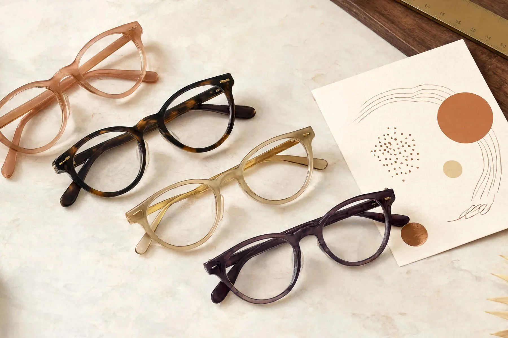
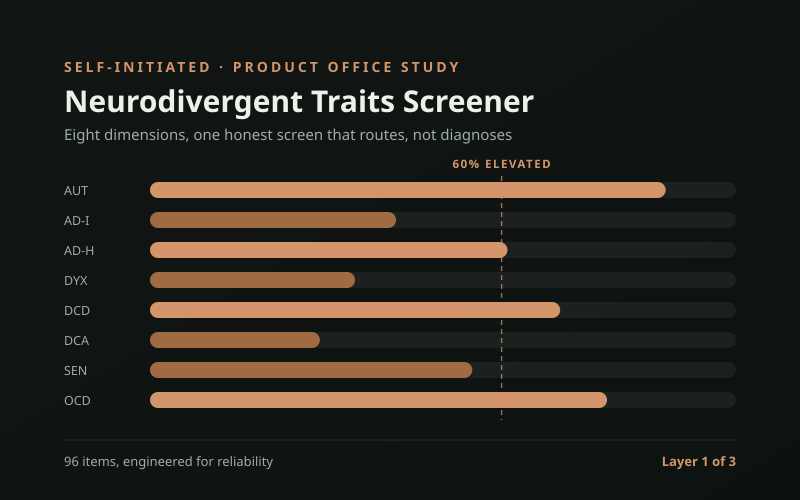

Selected work: case studies
Real products shipped in regulated environments – with the outcomes to show for it.

Driving a B2C to B2B2C pivot for a neurorehab platform
Led product strategy and design for a platform serving patients, clinicians, and health systems. Defined the enterprise roadmap, ran user research, and designed the product that delivered a 50% activation lift.

From concept to 5M downloads – a consumer product that became an enterprise data asset
Conceptualized, validated, and shipped a consumer app that redefined its category. Led feature prioritization, retention strategy, and built a consumer-to-enterprise data pipeline.

An analytics platform that closed enterprise deals before engineering started
Led product discovery and design for a family of B2B analytics products. Defined information architecture, prioritized with RICE, and created prototypes that directly closed enterprise contracts.

Turning an optician's instinct into an explainable product
A 0 to 1 venture. Built a seven-criteria scoring engine for in-store frame recommendations, then let real on-face evidence overturn a third of my own rankings. Designed and shipped the clickable product myself.

A self-screener rigorous enough to act on, honest enough not to diagnose
A 0 to 1 study in making a health tool honest. Designed the two-path flow and a scoring model built to route people onward, never to conclude, then engineered a 96-item bank for reliability and logged every decision.
The reference my bookmarks were trying to be
Built the cross-disciplinary reference I always wanted: UX, product, marketing, and content in one usable format. Defined the structure, distilled the content, and shipped the whole library solo, live and clickable in the case study.